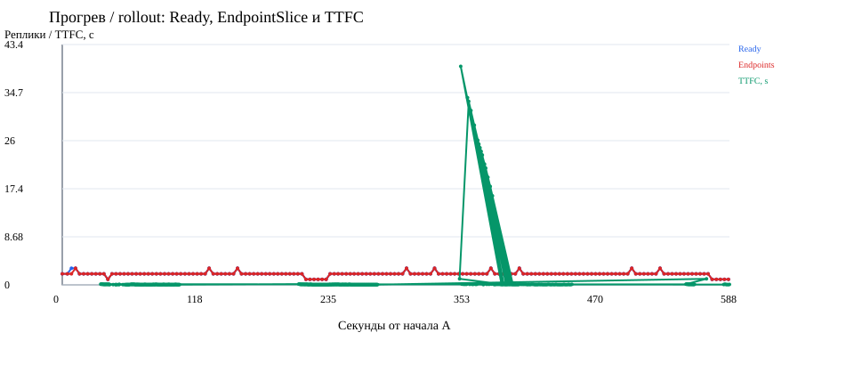
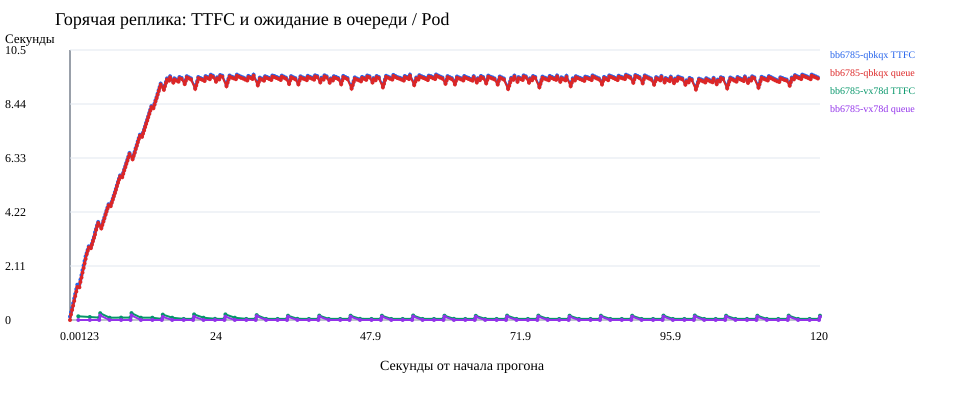
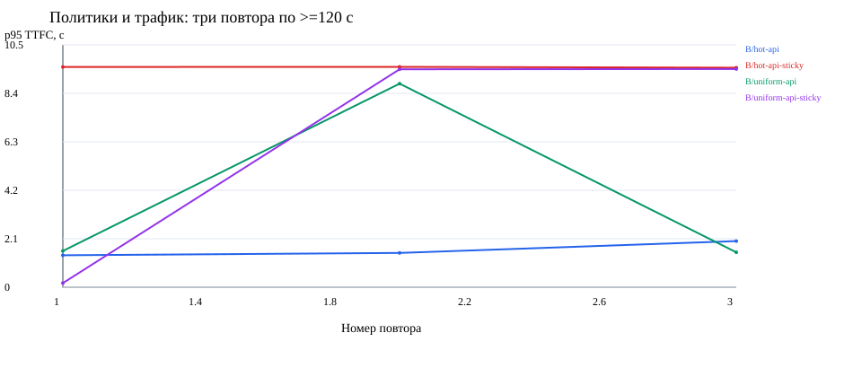
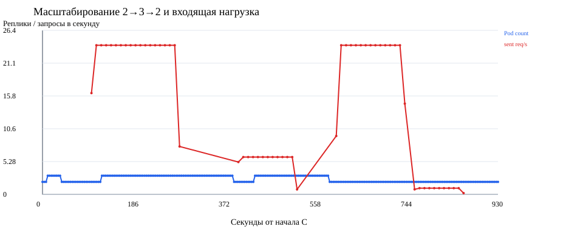

backend_mode=simulated. Части ответа имитатора не являются токенами модели. Используются TTFC и inter-chunk latency.
Автор, группа, ссылка на итоговый репозиторий и коммит: заполнить перед сдачей. Привязку кейса к лекции подтвердить по видео.
| Прогон | Запланировано | Успешно | p50 TTFC, с | p95 TTFC, с | Доля неуспеха | Макс. lag, с | Исходы |
|---|---|---|---|---|---|---|---|
| A/after-kill | 6 | 6 | 0.07141712449993065 | 0.11568194874962501 | 0.0 | 0.0009335091399407247 | {'completed': 6} |
| A/broken | 140 | 120 | 0.04549427849997301 | 0.09480053994998343 | 0.1428571428571429 | 0.0010853374378712033 | {'completed': 120, 'rejected': 20} |
| A/fixed | 140 | 140 | 0.04433394650050104 | 0.09408672830018076 | 0.0 | 0.0012321217145654373 | {'completed': 140} |
| A/forced-kill | 1 | 0 | None | None | 1.0 | 0.0009207739349221811 | {'aborted': 1} |
| A/rollback-to-A | 16 | 16 | 0.0919317295001747 | 0.1260710280002968 | 0.0 | 0.0012943206957061193 | {'completed': 16} |
| A/rollout-A-B | 100 | 100 | 0.08861802799992802 | 26.27011191395017 | 0.0 | 0.0012258372025826247 | {'completed': 100} |
| B/hot-api-1 | 720 | 720 | 0.3750297439999031 | 1.3828632743999139 | 0.0 | 0.0015953904307934863 | {'completed': 720} |
| B/hot-api-2 | 720 | 720 | 0.41750291999983347 | 1.4856598485999932 | 0.0 | 0.001500896582911082 | {'completed': 720} |
| B/hot-api-3 | 720 | 720 | 0.3782424189998892 | 1.9982449363500558 | 0.0 | 0.0009939328306245443 | {'completed': 720} |
| B/hot-api-sticky-1 | 720 | 528 | 9.388921446500262 | 9.545123144000149 | 0.2666666666666667 | 0.0023337394527516153 | {'completed': 528, 'rejected': 192} |
| B/hot-api-sticky-2 | 720 | 481 | 9.426330057000087 | 9.54736338199973 | 0.3319444444444445 | 0.00776439984474564 | {'completed': 481, 'rejected': 239} |
| B/hot-api-sticky-3 | 720 | 530 | 9.35055959950023 | 9.515615546999971 | 0.26388888888888884 | 0.0011758055397876888 | {'completed': 530, 'rejected': 190} |
| B/uniform-api-1 | 720 | 720 | 0.42600165049998395 | 1.5714484622498728 | 0.0 | 0.002981930296300561 | {'completed': 720} |
| B/uniform-api-2 | 720 | 720 | 1.3814115565000975 | 8.823491555050099 | 0.0 | 0.007477825001842575 | {'completed': 720} |
| B/uniform-api-3 | 720 | 720 | 0.4992265400001088 | 1.513861410749973 | 0.0 | 0.0019034833480873203 | {'completed': 720} |
| B/uniform-api-sticky-1 | 720 | 720 | 0.16357903099992654 | 0.17743915415021547 | 0.0 | 0.002086700221298088 | {'completed': 720} |
| B/uniform-api-sticky-2 | 720 | 617 | 9.148831879000227 | 9.445047820200035 | 0.1430555555555556 | 0.001240319229054876 | {'completed': 617, 'rejected': 103} |
| B/uniform-api-sticky-3 | 720 | 616 | 9.171634603999792 | 9.454605479249949 | 0.1444444444444445 | 0.001250836958661239 | {'completed': 616, 'rejected': 104} |
| C/alert-recovery | 100 | 100 | 0.012626752999949531 | 0.017753048649956325 | 0.0 | 0.0008574760258852621 | {'completed': 100} |
| C/alert-stimulus | 3360 | 85 | 3.8146590869991996 | 4.525359399199624 | 0.9747023809523809 | 0.0030691912352267536 | {'rejected': 3275, 'completed': 85} |
| C/scale-out | 4320 | 924 | 18.9556535024999 | 20.692550105799405 | 0.7861111111111111 | 0.022064773320380482 | {'completed': 924, 'rejected': 3396} |
| C/sticky-hot-after-scale | 720 | 420 | 13.047163990500394 | 13.224273426349374 | 0.41666666666666663 | 0.0035802622714982135 | {'completed': 420, 'rejected': 300} |
| checks/accounting | 2 | 0 | None | None | 1.0 | 0.0007467827019809192 | {'aborted': 1, 'rejected': 1} |
| checks/dialogue-before-replacement | 4 | 4 | 0.26573342999995475 | 0.39462032269993863 | 0.0 | 0.0013852966271770129 | {'completed': 4} |
| checks/dialogue-recovery | 4 | 4 | 0.25845961050004007 | 0.3839541459499741 | 0.0 | 0.0018556161962806073 | {'completed': 4} |
| Фаза | Проверка | Результат |
|---|---|---|
| A | warmup-broken | PASS |
| A | warmup-fixed | PASS |
| A | graceful rollout has no lost responses | PASS |
| A | never-ready release excluded | PASS |
| A | loaded version after rollback | PASS |
| A | forced kill is counted as aborted | PASS |
| A | service recovers after process kill | PASS |
| C | HPA reaches 3 ready replicas | PASS |
| C | HPA returns to 2 ready replicas | PASS |
| C | LabHighTTFC pending/firing/recovered | PASS |
| C | LabRefusals pending/firing/recovered | PASS |
| checks | warmup rejects direct readiness | PASS |
| checks | replacement preserves artifact version | PASS |
| checks | dialogue isolation | PASS |
| checks | refusal and incomplete stream accounting | PASS |
Гипотеза: готовность HTTP-процесса не означает готовность backend. Дефект включается BROKEN_PROBES; API получает запросы до прогрева и возвращает unready. Исправление: startup/readiness учитывают завершение прогрева. Liveness проверяет только живость процесса. Во время штатного обновления maxUnavailable=0, новый Pod прогревается, preStop снимает готовность и ждёт 8 с, grace period 90 с позволяет закончить поток.
Сравнить broken/fixed при одном расписании. Для rollout проверить все HTTP-статусы, терминальное событие done и присутствие B в ответах. Never-ready B исключается из готовых EndpointSlice. Управляемый возврат к A выполняется явным выпуском A через Helm. аварийный выход os._exit(137) — отдельный отказ с ожидаемым обрывом, не штатный rollout.

Обычный Service выбирается кандидатом исправления постоянной привязки. У каждого запроса отдельное TCP-соединение, Connection: close; четыре клиента имеют разные Pod IP. Сравниваются одинаковые входы и расписания при равномерном трафике и 80% трафика от client-0. После каждого полного rollout локальный кеш пуст; backend прогрет. Префиксный кеш LRU: 32 записи; стоимость hit 15000, miss 180000 итераций PBKDF2; обработка одна на Pod, очередь 32, тайм-аут очереди 30 с. Кеш имитирует стоимость пересчёта и не хранит состояние диалога.
Вывод выбирается по всем трём повторам: p95, доля отказов и распределение запросов. Разница может отсутствовать: это допустимый наблюдаемый результат. Проверить исходные IP, раскладку клиентов по Pod, lag генератора и запас ёмкости. CPU-числа относятся только к этой модели нагрузки. Для настоящего inference engine отдельно проверяются KV-cache, batching, перенос контекста и стоимость prefill.


HPA autoscaling/v2: CPU target 55% от request=200m, минимум 2, максимум 3 реплики, scaleDown stabilization 60 с. CPU-нагрузка вычислительная. До измерений проверяется resource metrics API. Усреднение может скрыть горячую реплику: при 100% и 0% среднее 50%, ниже цели 55%. При сохранённой ClientIP-привязке новая реплика может оставаться без тяжёлого клиента.
Алерты: p95 TTFC >0.8 с при >=10 завершениях за минуту; доля неуспешных >5% при >=20 исходах за минуту. Оба условия удерживаются 20 с. Фазы pending/firing и возврат фиксируются сырыми выборками ALERTS. Если стимул не дал переходов, это FAIL, требуется калибровка и полный повтор фазы.

Длительности на клиенте измеряются time.perf_counter. Wall clock нужен для выравнивания расписаний четырёх Pod, которые используют часы одной kind-ноды. TTFC — первый содержательный chunk минус отправка; inter-chunk latency — среднее соседних интервалов. p50/p95 рассчитываются только для completed, с числом наблюдений. Отказы, transport_error, aborted, timeout и not_sent учитываются отдельно; повторов нет, attempts=1. Сумма исходов равна числу запланированных запросов. Лимит генератора 64 потока и 128 ожидающих задач на клиент; lag записывается, а переполнение не скрывается.
histogram_quantile(0.95, sum by (le,pod) (rate(lab_ttfc_seconds_bucket[1m])))
Server Histogram наблюдает completed; клиент включает сетевую задержку и может иначе увидеть обрыв между последним chunk и done. Бакеты дают приближение. Сравнение нужно делать за одинаковый временной диапазон, набор завершённых запросов и Pod; короткие окна у границы rollout дают неполный набор. Готовая команда сверки — tools/reconcile.py. request ID хранится в журналах, метки Prometheus ограничены исходом/Pod/результатом кеша.
При очереди A в 3 секунды и пересчёте контекста на свободной B за 0.8 секунды новый запрос следует направить на B, если оценка включает передачу истории и B проходит проверку готовности и допуска по ёмкости. Экономия около 2.2 секунды относится к указанным условиям; постоянная привязка теряет смысл, когда ожидание дороже пересчёта. Нужны измерения p95 очереди и prefill по длинам контекста, частоты hit/miss, стоимости передачи, доступной памяти, ошибок и точности прогноза очереди. Допуск нового запроса должен учитывать активные вычисления, ограниченную очередь, дедлайн и объём контекста.
История диалога должна приходить от клиента или из внешнего хранилища: кеш A — ускорение, а не единственная копия состояния. После потери A клиент отправляет ту же историю на здоровую реплику, явно учитывая новую попытку и возможный повтор операции. Уже начатый поток нельзя незаметно переселить на B: во время штатного rollout он доживает на A в пределах grace period. После аварии клиент получает признак незавершённости; повтор оформляется отдельной попыткой, частичные фрагменты не склеиваются молча.
В лекции на отметке около 08:23, на слайде 70/224 «Результаты нагрузки Google», рассмотрен кейс Vertex AI и GKE Inference Gateway. В первичной публикации Google Cloud описана маршрутизация с учётом локальности префиксного кеша и текущей нагрузки. Повышение приоритета глубины очереди позволяло обходить горячие реплики даже при наличии подходящего кеша. Google сообщает о росте cache hit с 35% до 70% и снижении p95 TTFT на 52% для DeepSeek V3.1.
Этот кейс поддерживает наш вывод: наличие кеша не должно навсегда закреплять диалог за Pod. В нашем опыте с горячим клиентом ClientIP-привязка сопровождалась 26–33% отказов и p95 TTFC около 9,5 с, тогда как обычный Service завершил все запросы с p95 около 1,38–2,00 с. Поэтому при очереди A в 3 с и пересчёте на свободной B за 0,8 с новый запрос разумно направить на B, проверив её готовность и доступную ёмкость.
Наш CPU-имитатор демонстрирует проблему перекоса нагрузки. Маршрутизацию GKE Inference Gateway и настоящий KV-cache мы не воспроизводили; наши TTFC нельзя напрямую сравнивать с TTFT модели Google.
Первичный источник: Google Cloud — How we cut Vertex AI latency by 35% with GKE Inference Gateway .
Версии, лимиты и инвентаризация: evidence/preflight.json, versions.json, final-inventory.json. Настройки опытов: results/*/*/settings.json и schedule.json. Dashboard: monitoring/dashboard.json. Инструкция: README.md. Подробные логи и контрольные результаты: results/*.
Источник основы: ДЗ 8–10. Точный исходный коммит и характер адаптации указаны в PROVENANCE.md. Предыдущие результаты не выдаются за новые прогоны.
Проверки актуальных прогонов: 15 PASS из 15. Исходный неуспешный опыт хранится отдельно в archive/A-before-timeout-fix и не исключается из доказательств.
| Прогон | Запросов | Успешно | Исходы | Версии |
|---|---|---|---|---|
| До: очередь 30 с | 100 | 97 | {'completed': 97, 'rejected': 3} | {'A': 45, 'B': 55} |
| После: очередь 65 с | 100 | 100 | {'completed': 100} | {'A': 42, 'B': 58} |
В исходной конфигурации одна реплика одновременно обрабатывала один запрос; длительный поток занимал её примерно 40 с, а ожидание очереди ограничивалось 30 с. Получены HTTP 503 queue_timeout. Для опыта A очередь увеличена до 65 с при клиентском тайм-ауте 70 с и termination grace period 90 с. Длина потока и расписание нагрузки сохранены. Успех повтора подтверждается полными клиентскими результатами, а не только наличием B. Увеличение ожидания снижает отказы этой нагрузки ценой возможного роста задержки; оно не увеличивает вычислительную ёмкость.
| Трафик | Service | Повтор | Всего | Успешно | p95 TTFC, с | Доля неуспеха |
|---|---|---|---|---|---|---|
| uniform | api | 1 | 720 | 720 | 1.5714 | 0.0000 |
| uniform | api | 2 | 720 | 720 | 8.8235 | 0.0000 |
| uniform | api | 3 | 720 | 720 | 1.5139 | 0.0000 |
| uniform | api-sticky | 1 | 720 | 720 | 0.1774 | 0.0000 |
| uniform | api-sticky | 2 | 720 | 617 | 9.4450 | 0.1431 |
| uniform | api-sticky | 3 | 720 | 616 | 9.4546 | 0.1444 |
| hot | api | 1 | 720 | 720 | 1.3829 | 0.0000 |
| hot | api | 2 | 720 | 720 | 1.4857 | 0.0000 |
| hot | api | 3 | 720 | 720 | 1.9982 | 0.0000 |
| hot | api-sticky | 1 | 720 | 528 | 9.5451 | 0.2667 |
| hot | api-sticky | 2 | 720 | 481 | 9.5474 | 0.3319 |
| hot | api-sticky | 3 | 720 | 530 | 9.5156 | 0.2639 |
Для горячего клиента сравниваются все три повтора по задержке и отказам. Выбран обычный Service как исправление постоянной ClientIP-привязки для данного сценария. Для равномерного трафика привязка может давать низкую задержку при удачном распределении клиентов и локальности кеша, но также создаёт перекос при назначении нескольких клиентов одной реплике. Поэтому вывод не переносится на любую нагрузку. Выброс второго uniform/api-прогона нужно рассматривать вместе с CPU/очередями и трассой, а не удалять из результатов.
| Величина | Значение |
|---|---|
| Завершено по клиенту | 720 |
| p95 TTFC клиента, с | 1.3829 |
| p95 по Histogram, с | 1.5089 |
| Разница оценок p95, с | 0.1260 |
| Оценка increase(count) | 724.8878 |
histogram_quantile интерполирует внутри бакета, а increase экстраполирует прирост счётчика к границам диапазона, поэтому оценка количества может быть дробной. Это не число дополнительных фактических запросов. Клиент включает сетевую задержку; сервер измеряет другой участок обработки. Эти свойства объясняют возможное расхождение, но совпадение набора событий нельзя доказать одной близостью агрегатов. Сохраняются исходные запросы, терминальные журналы, границы времени и JSON сверки.
Первичные источники: increase и Histogram.
{
"p95": "histogram_quantile(0.95,sum by(le)(increase(lab_ttfc_seconds_bucket[128s])))",
"observations": "sum(increase(lab_ttfc_seconds_count[128s]))",
"buckets": "sum by(le)(increase(lab_ttfc_seconds_bucket[128s]))"
}
Перед сдачей заполнить ФИО, группу, ссылку на свой репозиторий и коммит. По видеолекции указать компанию, таймкод и первичную публикацию, затем связать кейс с ревью. Публикация репозитория выполняется автором работы. Наличие 15 PASS не заменяет эти пункты.